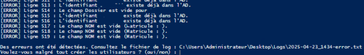
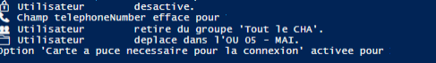

Gestion Automatisée du Cycle de Vie AD
Analyse, conception et déploiement d'une solution PowerShell pour l'automatisation des flux d'utilisateurs au sein du Groupe Hospitalier Artois-Ternois.
01. La Problématique
Avant mon intervention, la création des comptes (médecins, stagiaires, personnel administratif) s'effectuait manuellement via l'interface graphique ADUC (Active Directory Users and Computers).
Cette méthode présentait trois risques majeurs :
- Erreurs de saisie : Incohérence dans les matricules ou noms.
- Délai de traitement : Processus chronophage pour le pôle réseau.
- Sécurité : Oubli fréquent de désactivation des comptes lors des fins de contrats.
Risque identifié : Vulnérabilité du SI
02. Vérification et Intégrité des Données
La première étape du script consiste à parser un fichier CSV source. Pour garantir que seules des données propres entrent dans l'annuaire, j'ai implémenté une double vérification :
Filtrage par Expressions Régulières (Regex)
Chaque matricule est passé au crible d'une Regex pour vérifier qu'il correspond au standard de l'hôpital (ex: une lettre suivie de six chiffres). Si le format est invalide, le compte n'est pas créé et l'erreur est logguée.
if ($user.Matricule -notmatch "^[A-Z]{1}[0-9]{6}$") {
Write-Error "Format Matricule Invalide : $($user.Matricule)"
}

03. Automatisation de la Sortie (Offboarding)

Hygiène de l'Annuaire
Le script de nettoyage analyse les dates de fin de contrat. Lorsqu'un utilisateur quitte l'établissement, le processus est automatique :
- Désactivation immédiate du compte pour couper tout accès au SI.
- Déplacement vers une OU spécifique (Archives) triée par année/mois.
- Mise à jour de la description AD indiquant la raison et la date de clôture.
Bilan du Projet
"Ce projet a permis de stabiliser la base utilisateur du GHAT et de libérer un temps précieux pour les administrateurs systèmes lors des vagues d'arrivées de stagiaires."